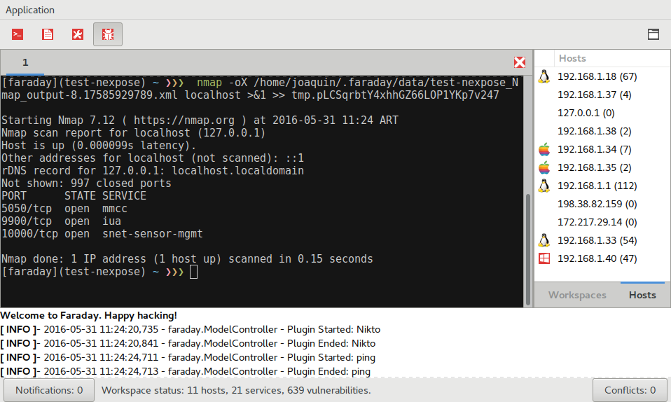
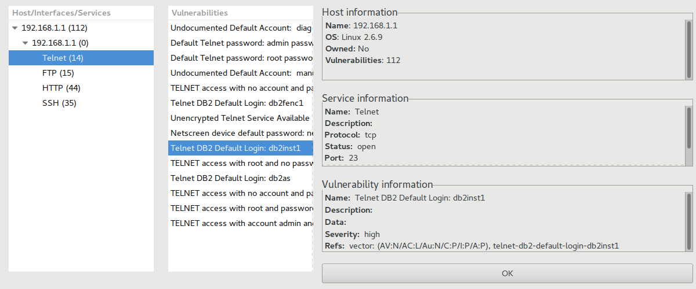
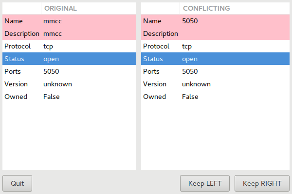
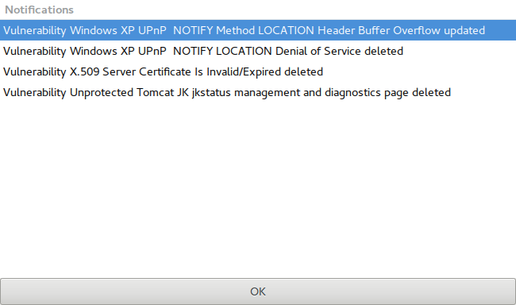
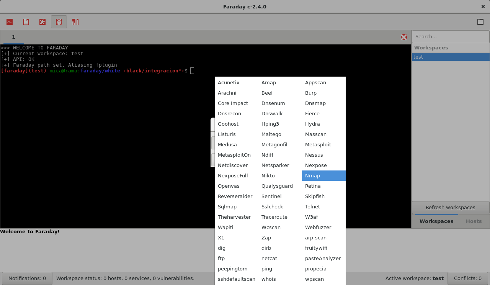
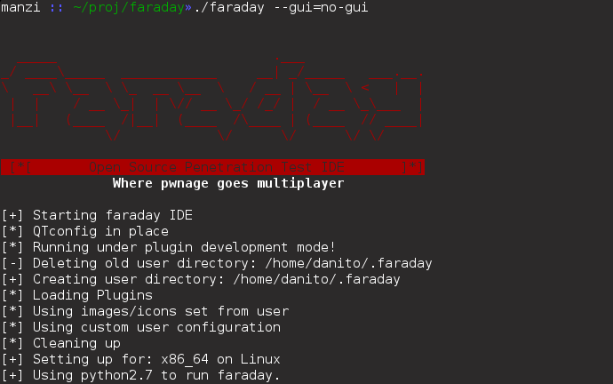
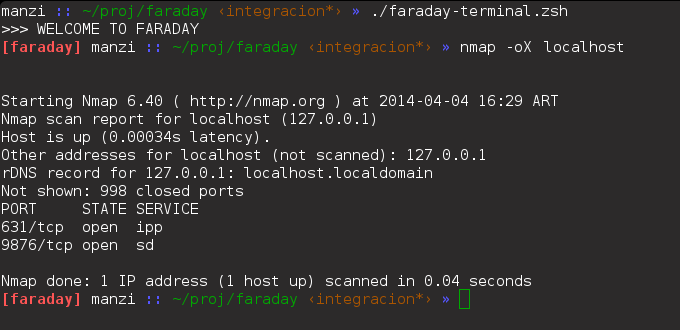

Faraday Client
Deprecated
We announced our decision to no longer maintain Faraday Client for our customers. We want to thank you for using it and provide feedback!
See how to move into faraday-cli
GTK¶
GTK+3 is designed to improve on the deprecated QT interface, so nothing should look out of place if you were already using Faraday.
To access Faraday GTK, run the following command in Faraday's folder:
$ faraday-client

You will be presented with a special version of your own ZSH terminal. Just as with GTK, Faraday intercepts every command you execute and checks if there's a plugin available. If there is, Faraday will interpret all the relevant information like ip adresses, hostnames, services, vulnerabilities, websites, and notes that the command generates.
The menu bar gives you access to the most common options, you can: open a new tab create a new workspace toggle the log set your Faraday Server URL in the preferences dialog
At the rightmost border, you'll be able to open a file chooser to import any report by our supported Plugins to Faraday.
The sidebar has two tabs, one for Workspaces and the other for Hosts. The Workspaces tab allows you to change Workspaces, while the Hosts tab shows you all the hosts in your current workspace, plus the amount of vulnerabilities found in each one of them inside parenthesis. Clicking on a host will show you more detailed information:

Here, the leftmost tree represents the Host itself, with all its interfaces as children. The interfaces, too, have children, which are the services of each interface. All of these items have the number of vulnerabilities discovered, inside parentheses.
The list of vulnerabilities shows the name of all the vulns found in the selected item of the leftmost tree.
The rightmost side of the windows shows detailed information of the host, the selected item of the leftmost tree (be it a service or an interface) and the selected vulnerability.
The log console works just as you'd expect, showing you what Faraday's doing in the background at all times. For more verbose output, you can run Faraday with the --debug flag.
The status-bar has information about your workspace and also buttons to access the Conflicts Resolution dialog and the Notifications dialog.
Conflicts resolution dialog¶

When Faraday finds an object which clashes with one you have already saved, it will inform you there's a conflict. Imagine you have a host marked as a Windows machine, but a tool detects a Linux installation. It's a conflict!
Faraday will show you the two conflicting objects, with its differences highlighted in red. You can edit the information in the objects, and then decide if you want to keep the left or right one.
Notifications dialog¶

Faraday is a multi-user integrated penetration test environment. That's why keeping up with changes coming from your collaborators is so important, and its why the notifications dialog exists.
While working, the notifications counter will increase as new changes come from other instances of Faraday clients connected to the same database. If you click on the button, you'll be presented with a list of all the updates, so you are never kept in the dark of what your collaborators are up to.
Adding Reports¶
If you wish to add a report from a previous scan, you can also do it from the GTK Client.
To do so, click on the Report Button
A dialog will open, from which you can select the tool that was used to generate the Report:

All the data in the report will be processed and added to the active Workspace, and the console will show a message when the plugin starts and ends.
ZSH¶
You can even run Faraday in detached mode connecting with a ZSH terminal to it:
First, you need to run Faraday with no GUI:
$ faraday-client --gui=no-gui

Now, run Faraday Terminal:
$ faraday-terminal

Using oh-my-zsh¶
You can use oh-my-zsh for managing your ZSH configuration. All you need to do is to install oh-my-zsh framework and then run the faraday-terminal command.
Importing your reports¶
To import your reports, drag-and-drop them into:
1 | |
Faraday will parse your reports and upload the information extracted from them.